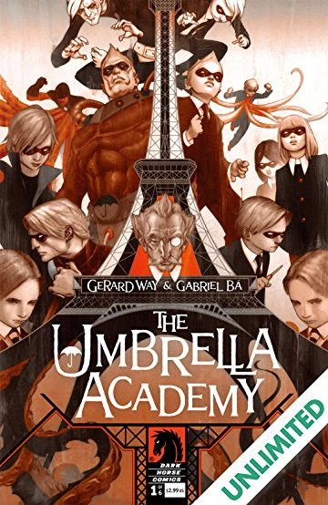

Introduccion
Originalmente, “The Umbrella Academy” es una serie de cómic creada por Gerard Way (de “My Chemical Romance”) y el dibujante Gabriel Ba, que fue publicada por Dark Horse. Se divide en distintos volúmenes, además de contar con varios spin-offs narrados en números únicos.
Gerard Arthur Way
La serie de comics The Umbrella Academy, surgen como idea original del musico y vocalista de My Chemical Romance, Gerard Arthur Way.
Gerard escribió su primer guion de historieta a una temprana edad, usando la máquina de escribir de su abuela; aunque "nada pasó con eso", ha dicho. Luego, la primera historieta de Way publicada (por la editorial Boneyard Press) fue una serie de terror llamada "On raven's wings", que fue cancelada después de su segundo capítulo; Way tenía apenas quince años, y fue acreditado como "Garry Way". A pesar de la música no habia dejado los cómics de lado, tanto es así que en 2007 llegó a publicar The Umbrella Academy, cuyo primer volumen (Apocalypse suite) ganó el premio Eisner a la mejor serie limitada del año y, por la buena recepción que tuvo, Way escribió un segundo volumen titulado Dallas.
En octubre de 2014 editó Edge of spider-verse n.º 5 a través de Marvel Comics, historia en la que creó una variante femenina del superhéroe Spider-Man. Ese mismo año publicó «Untitled», en la revista Vertigo quarterly: Yellow. Para junio de 2014, Way trabajaba en los volúmenes 3 y 4 de The Umbrella Academy. En diciembre de 2015 declaró que «Gabriel Bá está a punto de comenzar a dibujar» el tercer volumen, Hotel Oblivion.
En julio de 2017 Gerard Way confirmó que Netflix junto con Universal Cable Productions harían una serie de televisión basada en The Umbrella Academy, cuya primera temporada se estrenó el 15 de febrero de 2019.
Gabriel Bá
Gabriel Bá escribe historietas desde hace casi 15 años y se ha publicado en Francia, Italia, España, Estados Unidos y Brasil. Comenzó a autoeditar cómics con su hermano en 1993; su primera miniserie, "Sunflower and the Moon", de 1997, fue lanzada por una editorial brasileña como novela gráfica en 2000.
Publicaron en Estados Unidos por primera vez en 1999, con la miniserie ROLAND - días de ira , escrita y autoeditada por Shane Amaya. En los EE. UU., han contribuido en la antología Autobiographix de Dark Horse , publicada en 2003, junto con grandes del cómic como Frank Miller y Will Eisner . Su cómic independiente ROCK'n'ROLL fue elegido por Image Comics y publicado en noviembre de 2005.
En 2006, lanzaron De:TALES with Dark Horse, elegida por Booklist como una de las 10 mejores novelas gráficas de ese año y nominada a un premio Eisner a la mejor edición estadounidense de material internacional . Bá fue el artista de Casanova de Matt Fraction , publicado por Image Comics.
En 2007, Bá trabajó en The Umbrella Academy con el escritor Gerard Way , que está siendo publicado por Dark Horse , y su hermano Fábio Moon se hizo cargo del arte en Casanova
Apocalypse suite
Es el primer volumen de la serie de cómics "The Umbrella Academy", publicado entre septiembre de 2007 y febrero de 2008. La historia sigue a los miembros de la Academia Umbrella. Individuos quienes fueron adoptados y entrenados por el excéntrico Sir Reginald Hargreeves, se reúnen después de muchos años para enfrentar una amenaza catastrófica.
En el cómic, una misteriosa orquesta compuesta por niños prodigio y dirigida por el Conductor se convierte en una amenaza mundial. Su música tiene el poder de provocar el apocalipsis y sumir al mundo en el caos. La Academia Umbrella se une nuevamente para desentrañar los secretos detrás de esta orquesta y detener su plan malévolo.
A lo largo de la historia, los hermanos Hargreeves deben lidiar con sus propios problemas personales y enfrentar los conflictos que surgieron debido a su infancia disfuncional. Vanya, la única de los hermanos sin poderes aparentes, se revela como una figura clave en los eventos que amenazan al mundo, lo que desencadena tensiones y revelaciones sorprendentes dentro del grupo.
Dallas

Publicado en 2008 y abril de 2009. La historia de "Dallas" continúa justo donde terminó el primer volumen, "Apocalypse Suite". Los miembros disfuncionales de la Academia Umbrella, se enfrentan a una nueva y extraña amenaza. La serie se desarrolla en un mundo alternativo lleno de eventos y personajes peculiares.
En "Dallas", los hermanos Hargreeves se embarcan en una misión para viajar en el tiempo y prevenir el asesinato del presidente de los Estados Unidos, John F. Kennedy. Sin embargo, su misión no es tan sencilla como parece, ya que se enfrentan a diversos obstáculos y paradojas temporales que amenazan con cambiar el curso de la historia.
Hotel Oblivion
"Hotel Oblivion" es el tercer volumen de la aclamada serie de cómics "The Umbrella Academy", creado por Gerard Way y el artista Gabriel Bá. Fue publicado por Dark Horse Comics en formato de serie limitada entre octubre de 2018 y septiembre de 2019. El cómic se sitúa varios años después de los eventos de los volúmenes anteriores y sigue las aventuras de los miembros disfuncionales de la Academia Umbrella: Spaceboy, Kraken, Rumor, Número Cinco, Séance y Vanya. Tras un largo tiempo de ausencia, los hermanos Hargreeves regresan a la ciudad de Nueva York y se encuentran con un mundo caótico.
El Hotel Oblivion, una prisión de alta seguridad diseñada para encarcelar a supervillanos peligrosos, ha sufrido una catastrófica ruptura. Los criminales más malvados y poderosos han escapado y ahora siembran el caos en la ciudad. Cada miembro de la Academia Umbrella debe enfrentar sus propios demonios personales mientras luchan por atrapar a los fugitivos y restablecer el orden en la ciudad.